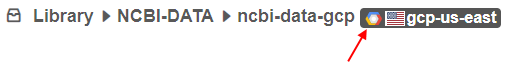
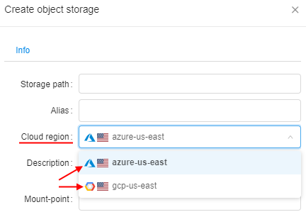
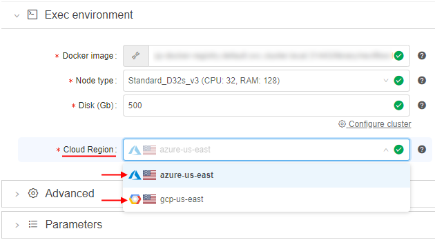
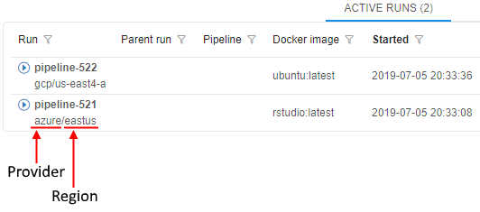
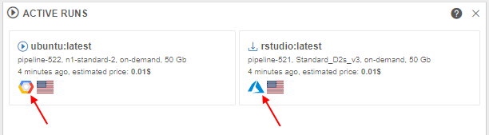
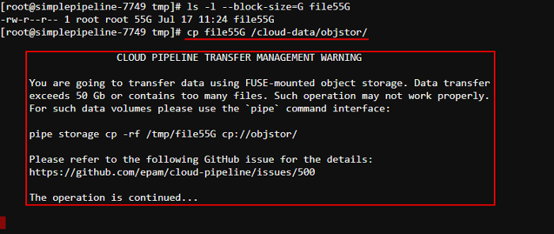
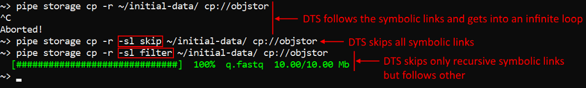
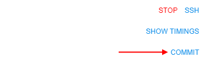
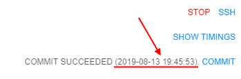

Cloud Pipeline v.0.16 - Release notes
- Google Cloud Platform Support
- Displaying Cloud Provider's icon
- Configurable timeout of GE Autoscale waiting
- Storage mounts data transfer restrictor
- Extended recursive symlinks handling
- Displaying of the latest commit date/time
- Notable Bug fixes
- Setting of the tool icon size
NPEwhile building cloud-specific environment variables for run- Worker nodes fail due to mismatch of the regions with the parent run
- Worker nodes shall not be restarted automatically
- Uploaded storage file content is downloaded back to client
- GUI improperly works with detached configurations in a non-default region
- Detached configuration doesn't respect region setting
- Incorrect behavior of the "Transfer to the cloud" form in case when a subfolder has own metadata
- Incorrect displaying of the "Start idle" checkbox
- Limit check of the maximum cluster size is incorrect
- Fixed cluster with SGE and DIND capabilities fails to start
- Azure:
pipeCLI cannot transfer empty files between storages - Azure: runs with enabled GE autoscaling doesn't stop
- Incorrect behavior while download files from external resources into several folders
- Detach configuration doesn't setup SGE for a single master run
Google Cloud Platform Support
One of the major v0.16 features is a support for the Google Cloud Platform.
All the features, that were previously used for AWS and Azure, are now available in all the same manner, from all the same GUI/CLI, for GCP.
This provides an even greater level of a flexibility to launch different jobs in the locations, closer to the data, with cheaper prices or better compute hardware in depend on a specific task.
Displaying Cloud Provider's icon for the storage/compute resources
As presented in v0.15, Cloud Pipeline can manage multi Cloud Providers in a single installation.
In the current version, useful icon-hints with the information about using Cloud Provider are introduced.
If a specific platform deployment has a number of Cloud Providers registered (e.g. AWS+Azure, GCP+Azure) - corresponding icons/text information are displaying next to the cloud resource.
Such cloud resources are:
Object/File Storages(icons in the Library, at the "DATA" panel of the Dashboard etc.)

Regions(icons in the Cloud Regions configuration, at the Launch form etc.)

Running jobs:- text hints (at the RUNS page)
 - icons (at the Run logs page, at the "RUNS" panels of the Dashboard)


- text hints (at the RUNS page)
Note: this feature is not available for deployments with a single Cloud Provider.
Examples of displaying Cloud Region icons/info see in sections 6. Manage Pipeline, 7. Manage Detached configuration, 8. Manage Data Storage and 18. Home page.
Configurable timeout of GE Autoscale waiting for a worker node up
Previously, GE Autoscaler waited for a worker node up for a fixed timeout. This could lead to incorrect behavior for specific CLoud Providers, because the timeout can be very different.
Current version extracts GE Autoscaler polling timeout to a new system preference ge.autoscaling.scale.up.polling.timeout.
That preference defines how many seconds GE Autoscaler should wait for pod initialization and run initialization.
Default value is 600 seconds (10 minutes).
Storage mounts data transfer restrictor
Users may perform cp or mv operations of the large files (50+ Gb) to and from the fuse-mounted storages.
It is uncovered that such operations are not handled properly within the fuse implementations. Commands may hang for a long timeout or produce zero-sized result.
The suggested more graceful approach for the copying of the large files is to use pipe cp/pipe mv commands, which are behaving correctly for the huge volumes.
To avoid users of performing usual cp or mv commands for operations with the large files - now, Cloud Pipeline warns them about possible errors and suggest to use corresponding pipe commands.
Specified approach is implemented in the following manner:
- if a
cp/mvcommand is called with the source/dest pointing to the storage (e.g./cloud-data/<storage_path>/...) - the overall size of the data being transferred is checked - if that size is greater than allowed, a warning message will be shown, e.g.:
 - this warning doesn't abort the user's command execution, it is continued
- appearance of this warning is configured by the following launch environment variables (values of these variables could be set only by admins via system-level settings):
CP_ALLOWED_MOUNT_TRANSFER_SIZE- sets number of gigabytes that is allowed to be transferred without warning. By default 50 Gb.CP_ALLOWED_MOUNT_TRANSFER_SIZE_TIMEOUT- sets number of seconds that the transfer size retrieving operation can take. By default 5 seconds.CP_ALLOWED_MOUNT_TRANSFER_FILES- sets number of files that is allowed to be transferred without warning. Supported only forAzureCloud Provider. By default 100 files.
Note: this feature is not available for
NFS/SMBmounts, only for object storages.
Extended recursive symlinks handling
There could be specific cases when some services execute tasks using the on-prem storages, where "recursive" symlinks are presented. This causes the Cloud Pipeline Data transfer service to follow symlinks infinitely.
In v0.16, a new feature is introduced for Data transfer service to detect such issues and skip the upload for files/folders, that cause infinite loop over symlinks.
A new option -sl (--symlinks) was added to the pipe storage cp / mv operations to handle symlinks (for local source) with the following possible values:
follow- follow symlinks (default)skip- do not follow symlinksfilter- follow symlinks but check for cyclic links and skip them
Example for the folder with recursive and non-recursive symbolic links:

Also options were added to the Data transfer service to set symlink policy for transfer operations.
For more details about pipe storage cp / mv operations see here.
Displaying of the latest commit date/time
Users can modify existing tools and then commit them to save performed changes.
It can be done by COMMIT button on the run's details page:

Previously, if user committed some tool, only commit status was shown on the run's details page.
In the current version, displaying of the date/time for the tool latest commit is added:

For more details about tool commit see here.
Notable Bug fixes
Setting of the tool icon size
Previously, setting of any value for the maximum tool's icon size via the sytem-level preference misc.max.tool.icon.size.kb didn't lead to anything - restriction for the size while trying to change an icon was remaining the same - 50 Kb.
NPE while building cloud-specific environment variables for run
For each run a set of cloud-specific environment variables (including account names, credentials, etc.) is build. This functionality resulted to fails with NPE when some of these variables are null.
Now, such null variables are filtered out with warn logs.
Worker nodes fail due to mismatch of the regions with the parent run
In certain cases, when a new child run was launching in cluster, cloud region was not specified directly and it might be created in a region differing from the parent run, that could lead to fails.
Now, worker runs inherit parent's run cloud region.
Worker nodes shall not be restarted automatically
Cloud Pipeline has a functionality to restart so called batch job runs automatically when run is terminated due to some technical issues, e.g. spot instance termination. Previously, runs that were created as child nodes for some parent run were also restarted.
Now, automatically child reruns for the described cases with the batch job runs are rejected.
Uploaded storage file content is downloaded back to client
Cloud Pipeline clients use specific POST API method to upload local files to the cloud storages. Previously, this method not only uploaded files to the cloud storage but also mistakenly returned uploaded file content back to the client. It led to a significant upload time increase.
GUI improperly works with detached configurations in a non-default region
Saved instance type of a non-default region in a detached configuration wasn't displayed in case when such configuration was reopened (instance type field was displayed as empty in that cases).
Detached configuration doesn't respect region setting
Region setting was not applied when pipeline is launched using detached configuration.
Now, cloud region ID is merged into the detached configuration settings.
Incorrect behavior of the "Transfer to the cloud" form in case when a subfolder has own metadata
Previously, when you tried to download files from external resources using metadata (see here) and in that metadata's folder there was any subfolder with its own metadata - on the "Transfer to the Cloud" form attributes (columns) of both metadata files were mistakenly displaying.
Incorrect displaying of the "Start idle" checkbox
If for the configuration form with several tabs user was setting the Start idle checkbox on any tab and then switched between sub-configurations tabs - the "checked" state of the Start idle checkbox didn't change, even if Cmd template field was appearing with its value (these events are mutually exclusive).
Limit check of the maximum cluster size is incorrect
Maximum allowed number of runs (size of the cluster) created at once is limited by system preference launch.max.scheduled.number. This check used strictly "less" check rather then "less or equal" to allow or deny cluster launch.
Now, the "less or equal" check is used.
Fixed cluster with SGE and DIND capabilities fails to start
Previously, fixed cluster with both CP_CAP_SGE and CP_CAP_DIND_CONTAINER options enabled with more than one worker failed to start. Some of the workers failed on either SGEWorkerSetup or SetupDind task with different errors. Scripts were executed in the same one shared analysis directory. So, some workers could delete files downloaded by other workers.
Azure: pipe CLI cannot transfer empty files between storages
Previously, empty files couldn't be transferred within a single Azure storage or between two Azure storages using pipe CLI, it throwed an error. So for example, a folder that contained empty files couldn't be copied correctly.
Azure: runs with enabled GE autoscaling doesn't stop
All Azure runs with enabled GE autoscaling were stuck after the launch.sh script has finished its execution. Daemon GE autoscaler process kept container alive. It was caused by the run process stdout and stderr aren't handled the same way for different Cloud Provider. So background processes launched from launch.sh directly could prevent Azure run finalization.
Incorrect behavior while download files from external resources into several folders
If user was tried to download files from external resources and at the Transfer settings form was set Create folders for each path field checkbox without setting any name field, all files downloaded into one folder without creating folders for each path field (column).
Detach configuration doesn't setup SGE for a single master run
Grid Engine installation was mistakenly being skipped, if pipeline was launched with enabled system parameter CP_CAP_SGE via a detach configuration.